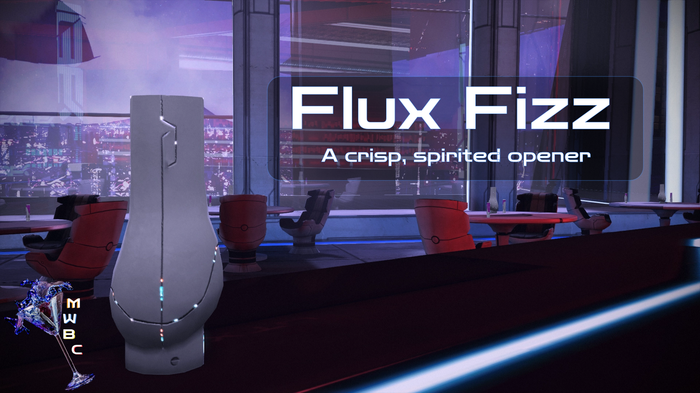

A New Adventure
The crawl begins - Mass Effect 1, where it all started. A little rough, a little clunky, but full of heart and promise. This leg of the journey focuses on smoothing edges, tightening seams, and keeping the magic intact.
Grab your drink, check your squad’s tabs, and let’s head out across the Citadel and beyond.
A note on downloading mods:
Batch
A curated night around the galaxy awaits those partaking in my vision.
To start, download your menu for the evening:
Flux Fizz: A crisp, spirited opener - refreshing the legend from the very first sip.
Download it directly here (by clicking on the image):

or from the Nexus page:
(Nexus link to my guide once it's online)
Installation
Who says the journey need be any less than the destination? Here’s the secret to a good bar crawl:
- Open M3.
- Navigate to Mod Management → Batch Mod Installer.
-
- If you downloaded the list through M3, it will appear automatically.
- If you downloaded it manually, place the file into:(Your M3 folder)/mods/BatchModQueues
Then reopen the Batch Mod Installer. -
Go down the list and download each mod through the Batch Mod Installer to ensure you get the correct versions.
Depending on file sizes and whether you’re on free or premium Nexus, this may take a bit - please be patient with our aging barman. - Once all mods are downloaded, click Install this group and wait for the process to finish.
- Launch the game once to confirm everything works.
- Enjoy the rest of your night and proceed to Finish.
Manual
An unforgettable selection awaits the adventurous soul - those who wish to color the night to their own liking.
Patches / Compatibility / Downloads
Thanks to the install order below, all required compatibility patches will appear at the correct time.
You can simply follow the list from top to bottom.
LE1 Community Patch
Fixes thousands of bugs in the game and is foundational for a lot of other mods.
Myriad Pro Begone
Replaces the font used throughout the game with something more fitting for the setting.
Note: You need to install this after the Community Patch for technical reasons.
Note: The file you download has a version for every game plus the Launcher. You may import everything if you want or just choose the LE1 version.
Advanced Weapon Models
Replaces Weapon Models with updated counterparts from LE2 or LE3.
Note: If you plan to use LE1 Diversification Project this is a required mod.
Halcyon Hairpack
Over a dozen new Hairstyles for NPCs based on designs from The Outer Worlds.
Note: If you plan to use LE1 Diversification Project this is a required mod.
Appearance Modification Menu
Allows you to override the casual and combat appearance for yourself and your companions.
Think of it like a Transmog system.
Geth Retrofits
Overhauls and diversifies the Geth enemies to bring them in line with LE3.
Note: This mod requires Appearance Modification Menu.
Streamlined Weapon Loadouts
Limits the weapons each character can equip to those their class is proficient in, similarly to how it works in LE2 and LE3.
Elements of Comparative Weaponry
More accurate and relevant weapon stats for easier comparison.
Pinnacle Station DLC
Restores the DLC that was lost in the transition to the LE.
Private Message Terminal
Adds a message terminal to the CIC and Shepard's cabin, similar to the ones in LE2 or LE3.
A Little Help From My Friends
Receive messages from your friends on the Normandy to help you with the collection assignments.
Note: This mod requires Private Message Terminal.
ME1 Dossiers Restored
Restores cut messages and dossiers from the defunct ME1 website.
Note: This mod requires Private Message Terminal.
Casual Hubs
You and your squadmates wear casual outfits during hub visits (e.g. Citadel) instead of armor.
Black Market License
Restores powerful, cut gear for you to find all over the galaxy.
Note: You may find these additions overpowered. Thankfully you can remove them from the loot pool again through the same store you get the titular license from.
Return to Normandy Button
Allows you to return to the Normandy from the map screen instead of having to walk back.
Normandy Rapid Transit
Allows you to return to the Normandy through the Rapid Transit terminals instead of having to walk.
Skip Minigames
Allows you to skip the thrilling minigames you definitely won't get sick of after thirty hours.
Morlan's Iconic Armor Store
A store stocking "iconic" looking armor for you and your squad.
Charted Worlds
Unveils Points of Interests on the Uncharted World maps.
Galaxy Map Trackers
Tracks active and undiscovered assignments on the galaxy map.
Mission Timings
Virmire now won't unlock until you've done the other three main missions.
N7 Mako
Rebalances the handling of the Mako ground vehicle.
XP Rescale
Rebalances XP gains to make reaching max level in one playthrough possible.
Note: I recommend the default option.
Dr. Heart Experiments
Changes the appearance of an enemy to make them unique and better match the quest.
Mira Please Be Quiet
Disables the annoying ambient lines of a certain character on Noveria.
Note: USER ALERT
Saren Stages
Changes Saren's appearance throughout the game as he loses his mind.
Alliance Uniform Consitency
Updates Alliance Uniforms to bring them in line with LE3.
Liara Consistency Mod
Updates Liara's design to make it consistent across games.
Note: You have two options here. Personally I recommend her LE3 appearance to have her be consistent throughout the trilogy.
Note: If you plan on following the Textures section later, the LE3 version is required.
Anderson Consistency Mod
Gives Anderson his LE3 face.
Prothean Consistency Mod
Changes Vigil's appearance to that of a Prothean.
Unique Udina Face Restored LE1
Backports and restores a unique look for Udina.
MELLO
Completely restores the broken dynamic lighting in the game.
Note: I recommend choosing the default option even if you plan on having some effects disabled.
LE1 Diversification Project
A massive overhaul of every part of the game with the goal of making the world feel more lived in.
Spectre Expansion Mod - LE1
Expanded Galaxy Map, new lore and additional content.
Note: LE1 Diversification Project is a soft requirement, but needed to access the Hanar Embassy.
Remove Feros Color Filter
The LE added a yellow filter to Feros that I personally really dislike. This mod removes it.
Keepers Finders
Marks the location of all Keepers on your map for the relevant quest.
A Lot Of Videos
Manually upscaled all pre-rendered videos in the game to 4k60fps.
Smoother GUI
The menus in the game are rendered at 30fps. This mod adjusted them to 60fps, which is a noticeable improvement.
Patch Notes
All necessary compatibility patches should have appeared at the right time during installation.
If a patch option did not appear for a mod, simply reinstall that single mod to refresh its patch list.
Otherwise, no additional steps are required - you're good to go.
Proceed to the next game or go to Finish.